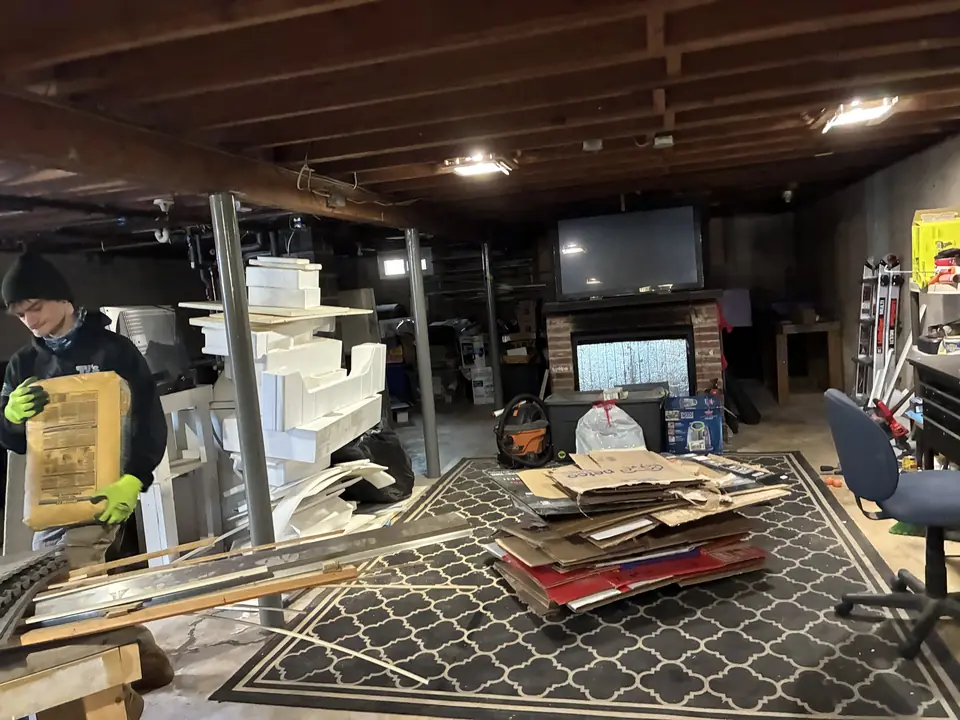
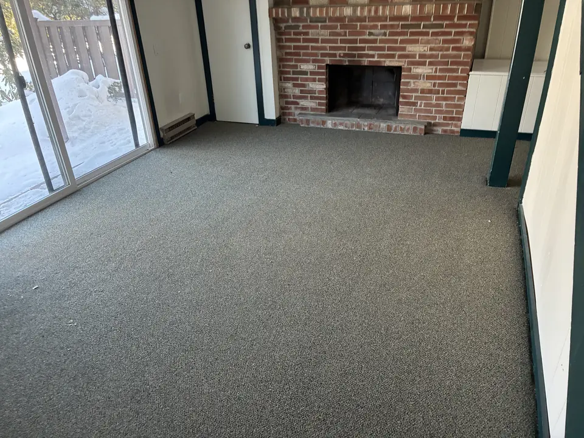

Serving Hartford, Tolland, Middlesex & New London Counties, CT
House, Garage & Estate Cleanouts
A whole house, one room, or a garage packed to the ceiling. You don't have to sort anything first. We clear it, haul it away and leave the space swept and empty.
- Houses, estates, garages, basements, attics and storage units
- Serving 78 towns in Hartford, Tolland, Middlesex & New London Counties
- Phones answered 7am to 10pm, 7 days a week.
Free on-site quote. No obligation. No credit card required.

- Licensed & insured
- Local and family-owned, not a franchise
- Firm price before we start
- 2 hour arrival windows
- BBB A+ accredited
Big or small, room by room
Whole house cleanouts
Moving, selling, or a house that's simply full. We clear it top to bottom.
Estate cleanouts
For families and executors. We work at your pace and set aside what the family wants to keep.
Garage cleanouts
Years of stuff out in one visit, down to a swept floor you can park on.
Basement & attic cleanouts
Stairs, tight corners and heavy boxes are our problem. You just point.
Rental & property cleanouts
Between tenants or after a move out, so the unit is ready to show.
Storage unit cleanouts
We clear the whole unit, lock to lock, and you hand back the key.

Real TJ's job: the room after the crew finished.
You don't sort. We handle it.
It starts with a quick walk through. Point out anything that stays, and we work around it. Then the crew goes room by room, carries everything out and loads the truck.
Anything reusable goes to local donation centers when they'll take it. Metals and electronics go where they belong. When the last load is on the truck, we sweep up and leave the space empty and clean.
Three steps, one phone call
Call us
Tell us what you need gone and where it is. We book a 2 hour arrival window. Same-day is often available.
Firm price on site
The crew looks at the job and gives you a firm price before anything moves. You say go, or you don't.
Gone, and swept up
We do all the lifting and loading, protect floors and doorways on the way out, and sweep up when we're done.
Before you call
Do I need to sort or bag anything first?
No. Leave it how it is. Just tell us what stays.
How long does a cleanout take?
A garage or a couple of rooms is often done in a few hours. A full house can take longer, and we'll tell you what to expect once we see it.
Can you work with our realtor, landlord or the estate attorney?
Yes. Tell us who to coordinate with and we'll work around their timeline.
What happens to things that are still usable?
Reusable items go to local donation centers when they'll take them. The rest is recycled or disposed of properly.
How is a cleanout priced?
By how much room it all takes up in the truck. The crew gives you a firm price on site and you approve it before we start.
Cleanouts our customers talk about
★★★★★"I had become overwhelmed by the garage and basement. In 2 hours the areas were cleared and cleaned. The staff were respectful, professional, and non-judgmental."
Judith W. · Garage and basement cleanout
★★★★★"The estimate they gave me at the beginning was exactly what I ended up paying. The guys were very fast and got everything out in about 30 minutes."
Liz T. · Garage cleanout
★★★★★"TJ's was a joy to work with. The whole process was easy, pricing was transparent and fair... showed up promptly on time and were happy to even pick up a few extra things we found while they were there."
Jennifer H. · Cleanout
Reviews and rating pulled live from Google.
Cleanouts across Hartford, Tolland, Middlesex & New London Counties
Every town below is in our area. Based in South Windsor, so most of these are a short drive for the crew.
Don't see your town?
Call anyway. If you're close to the line we'll tell you straight on the phone whether we can get there.
Hartford County 29 towns
Avon, Berlin, Bloomfield, Bristol, Burlington, Canton, East Granby, East Hartford, East Windsor, Enfield, Farmington, Glastonbury, Granby, Hartford, Hartland, Manchester, Marlborough, New Britain, Newington, Plainville, Rocky Hill, Simsbury, South Windsor, Southington, Suffield, West Hartford, Wethersfield, Windsor, Windsor Locks
Tolland County 13 towns
Andover, Bolton, Columbia, Coventry, Ellington, Hebron, Mansfield, Somers, Stafford, Tolland, Union, Vernon, Willington
Middlesex County 15 towns
Chester, Clinton, Cromwell, Deep River, Durham, East Haddam, East Hampton, Essex, Haddam, Killingworth, Middlefield, Middletown, Old Saybrook, Portland, Westbrook
New London County 21 towns
Bozrah, Colchester, East Lyme, Franklin, Griswold, Groton, Lebanon, Ledyard, Lisbon, Lyme, Montville, New London, North Stonington, Norwich, Old Lyme, Preston, Salem, Sprague, Stonington, Voluntown, Waterford
Let's clear it out
One call. Firm price on site before we start. Same-day often available.
☎ Call (860) 503-9062